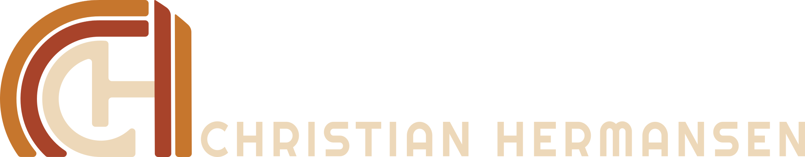

Nettsider
Tegnet for deg, og laget for telefon først.
- Design som ikke er en mal
- Innhold du redigerer selv
- Opplæring når du tar over

Jeg er Christian Hermansen. Jeg bygger nettsider, apper og digitale verktøy i Bergen, og rydder i det som har vokst seg sammen.
Fortell hva du trenger Rull, så greier vi den utÉn nettside du kan drive selv. Én app som gjør én ting godt. Ett verktøy som tar jobben ingen har tid til.
Nettsider, apper og digitale verktøy. Det er det jeg bygger.
De fleste trenger mer enn én. Fanatastisk fikk både nettside og app, bygget på det samme innholdet.
Tre ting jeg bygger. Samme håndverk i alle tre, og du kan drive det selv etterpå.
Tegnet for deg, og laget for telefon først.
For iPhone, eller rett i nettleseren.
Små verktøy som tar jobben ingen har tid til.
Som denne. Du ruller, og siden svarer. Historien din kan fortelles på samme måte, i den rekkefølgen du vil ha den.
Driver du noe som gjør det bedre for andre, kan du søke om hjelp uten regning. Ett prosjekt om gangen. Det er måten jeg gir tilbake på.
Fanatastisk, musikkfestivalen i Fana, fikk nettside, app og trykksaker. Nettsiden hadde 5 558 besøkende i festivaluken, og appen ble godkjent av Apple på under et døgn.
Send en e-post. Jeg svarer selv.
epost@christianhermansen.no